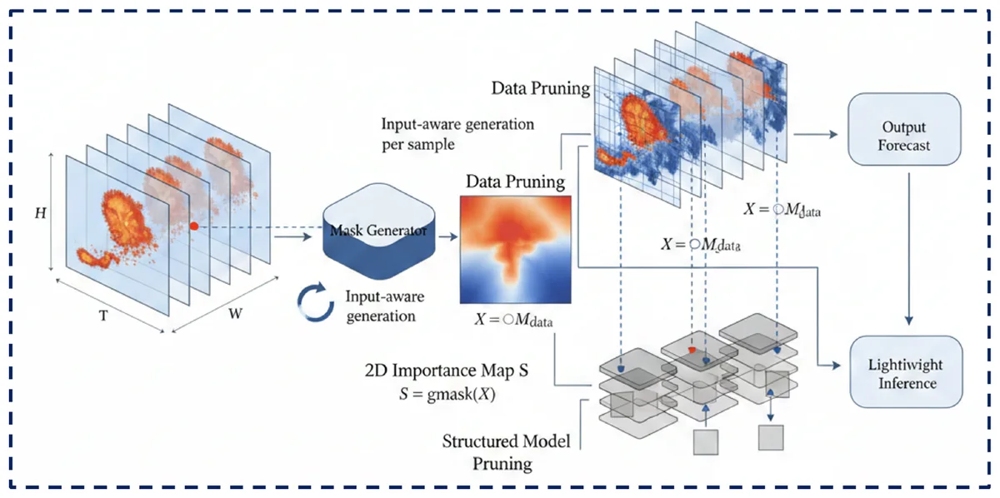

DYNA-PRUNER: Input-Adaptive Data-Model Co-Pruning for Efficient and Scalable Spatio-Temporal Media Prediction
@misc{zhang2026dynapruner,
title = {DYNA-PRUNER: Input-Adaptive Data-Model Co-Pruning for Efficient and Scalable Spatio-Temporal Media Prediction},
author = {Zhang, Fuyan and Li, Yuqi and Xu, Qing and Tian, Yingli and Ho, Edmond S. L.},
year = {2026},
eprint = {2606.15346},
archivePrefix = {arXiv},
primaryClass = {cs.CV},
doi = {10.48550/arXiv.2606.15346},
url = {https://arxiv.org/abs/2606.15346},
note = {ICME 2026 Spotlight Paper}
}